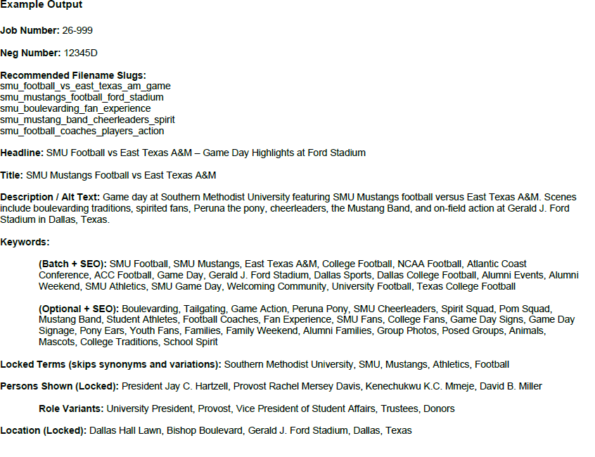
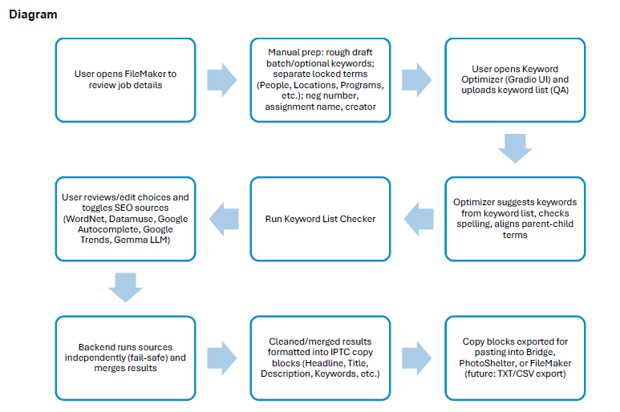

Overview
The prototype explores how a lightweight local language model and independent lexical or search sources can help editors prepare titles, descriptions, keyword groups, people, and locations without abandoning an approved taxonomy or human review.
Problem
Institutional photo and video metadata can become inconsistent when keywording is manual, time-consuming, and spread across different tools. Generic AI output alone is not a safe solution because it can ignore controlled terms, invent details, or weaken editorial consistency.
Context & role
I developed the prototype and proposal while supporting SMU media workflows. This public case study describes the architecture and sanitized examples; it does not publish internal taxonomy files, unpublished media records, or proprietary job information.
Approach & workflow
- Collect job context. Enter approved details and a draft keyword list.
- Protect locked terms. Preserve names, locations, programs, and controlled terms that should not be expanded.
- Run independent sources. Allow editors to toggle lexical, search, trend, or language-model suggestions.
- Merge and format. Produce copy-ready IPTC blocks for headline, title, description, keywords, people, and locations.
- Require review. Keep the editor responsible for relevance, accuracy, accessibility, and final export.
Tools & technologies
Data & inputs
The prototype accepts job context, draft keywords, locked terms, and structured metadata fields. The design separates locally controlled vocabulary from optional external sources so an unavailable service does not block the entire workflow.
Results
Working proof of concept
The Gradio interface demonstrates structured input, preserved terms, selectable suggestion sources, and copy-ready metadata output. It validates the workflow concept without claiming production deployment or measured time savings.


Technical challenges
- Controlled taxonomy and open-ended suggestions serve different purposes and must remain distinguishable.
- External services can fail, change, or introduce costs.
- Language-model output requires fact checking and editorial ownership.
- Descriptions must serve accessibility and discoverability without keyword stuffing.
Limitations
This is a proof of concept, not a production DAM integration. It does not independently verify people, locations, rights, or job facts; it does not measure search ranking improvement; and external sources may change availability or behavior.
Future improvements
- Add export to TXT or CSV and controlled batch processing.
- Introduce validation tests for required fields and approved terms.
- Log which source produced each suggestion.
- Add privacy review and local-model evaluation before broader use.
- Measure editor correction rates and time only after a controlled pilot.